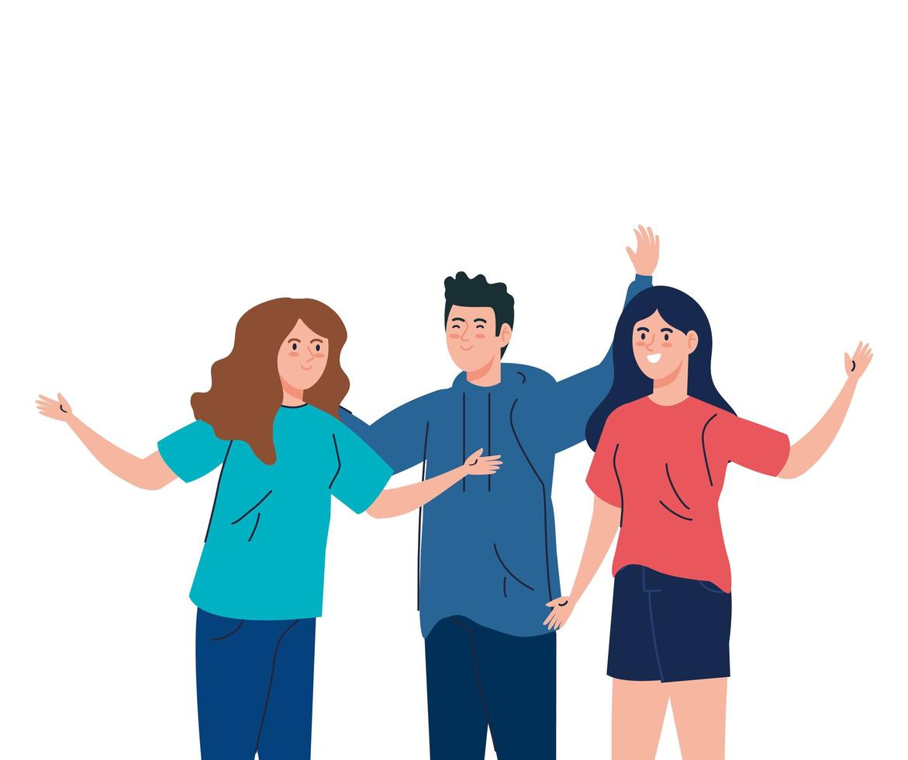

This website is made for the people who need someone to talk to if they have a problem not many people get in their lives. This was made because I know how it feels to not have someone understanding to talk to when your down. A way of helping others as they help you. Which ends up with both said people helping each other with each getting the support they need. This website isn't for cyberbullying only the pure opposite. We want to make this website to help people out when they need someone to speak with. Someone to get them and to understand how they're not alright. And to finally take off that mask that fakes who they really are.
